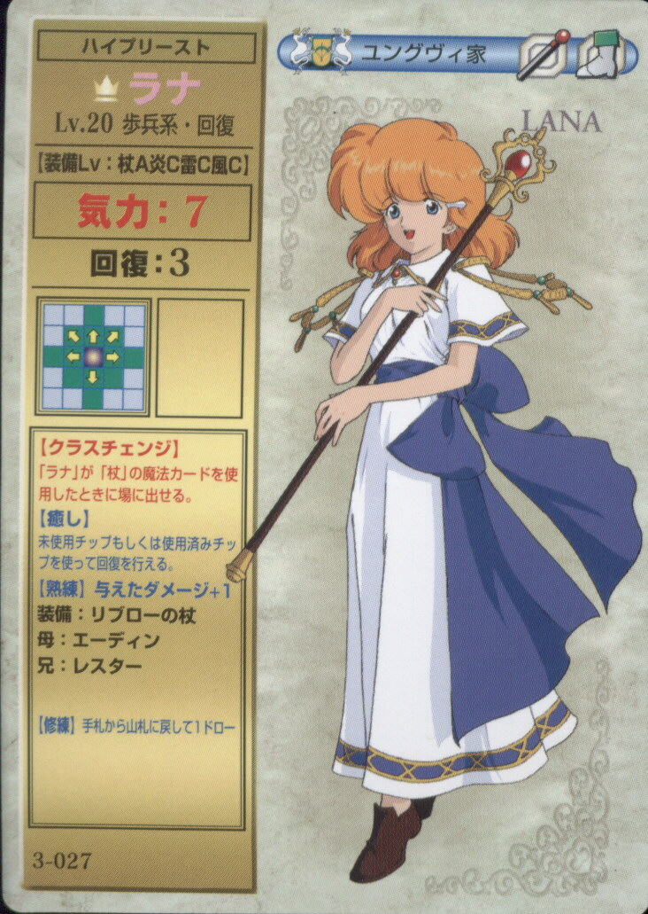

- Card Games Rules & Instructions - Games and Puzzles and ...
If you're tired of playing card games, other popular card games include Magic: The Gathering, Yu-Gi-Oh, Pok émon, and others. There are numerous fun card games, each with their own rules and gameplay such as two-player card games, drinking games, fun card games for 3 and multi-player card games allowing plenty of choices for everyone. - Free Card Games Online - Play Hearts, Bridge, Spades and ...
Play card games for free whenever you like--when at work, school, or home--and make all your friends jealous with your ever-increasing solitaire skills! Klondike Solitaire is the most popular card game around. Card Game Solitaire does it better than the rest offering smooth game play and an undo button! - CardGames.io - Play all your favorite classic card games.
Free Online Card Games. iCardGames.com has a huge collection of over 100 card games in a variety of different Genres. Below is a subset of the games on this site. For more games, see our full list of card games. Trick Taking Card Games. In all trick taking card games, each hand is centered around a series of rounds which are called "tricks". - The Most Popular & Fun Card Games to Play, Ranked
Here is a collection of our top card games for you to play. These include the famous Freecell Solitaire, the extremely addictive Classic Solitaire, the ultra fun Solitaire Classic and 254 more! - Free Online Card Games | Play Card Games for Free Online
CardGames.io is a game site focused on classic card and board games. Our goal is to make great versions of the games you already know and love in real life. We try very hard to make the games simple and easy to use, and hope you enjoy playing them as much as we enjoy making them 🙂. - 40+ Great Card Games For All Occasions – PlayingCardDecks.com
Yes, that game. Our extensive collection of free online card games spans 10 classic solitaire titles, as well as several other best in class card games including 2 classic versions of Bridge, Classic Solitaire, Canfield Solitaire, and Blackjack, to name a few. - Card Games - Play Card Games on Free Online Games
Trick-Taking Games Trick taking games are one of the most common types of card games, and classics like Hearts and Spades are good examples. It is a game where players all have a hand of cards, and game-play revolves around a series of "tricks", in which each trick involves everyone playing one card from their hand, with the trick typically going to the person who played the highest card. - Card Games
This is the category where you'll find lots of classic card games including various different styles of Solitaire along with Hearts, Blackjack, Poker (including the fantastic Governor of Poker series), and even Uno. Plus, you can enjoy themed versions of all of these classics. They're a great way to celebrate holidays or other special occasions. - Card Games You Can Play and Enjoy Online Today
A full listing of card games that are available today such as Solitaire and Bridge. Find the card game that is best for you and play now for free! - Card Game Solitaire
Card games are more than a rainy day past time. They refine mental skills like logic, observation, and memory. Whether it's a solo game of solitaire or a fast paced multi-player game, card games are enjoyed the world around.

Logout Home Member Benefits Work & Jobs Health & Wellness Insurance Finances Technology & Wireless Travel Shopping & Groceries Gas & Auto Services Family Caregiving Restaurants Home & Real Estate Entertainment Community Advocacy Magazines & Resources (EN ESPAÑOL) Coronavirus Health Medicare Resource Center Health Insurance Conditions & Treatments Hearing Center Eye Center Healthy Living Drugs & Supplements Brain Health Dementia Health & Wellness Benefits Staying Sharp Family Caregiving Basics Care at Home Nursing Homes Medical Financial & Legal Caregiver Life Balance Community Local Resources Stories Work & Jobs Job Search Working at 50+ Career Change Small Business For Employers Unemployment Scams & Fraud Retirement Social Security Travel Travel Tips Vacation Ideas Destinations Money Living on a Budget Managing Debt Saving & Investing Taxes Retirement Planning Home & Family Family & Friends Your Home Personal Technology Family Caregiving Community Voices Entertainment Movies for Grownups TV for Grownups Celebrities Music Beauty & Style Books Politics & Society Advocacy Government & Elections Events & History Government Watch Auto Car Buying Driver Safety Maintenance & Safety Trends & Lifestyle Videos Podcasts Games Members Only Arcade Atari Juegos Mahjongg Rewards Solitaire Word Staying Sharp Food AARP In Your State AARP In Your City AARP Foundation AARP Bulletin AARP The Magazine AARP EN ESPAÑOL AARP 樂齡會 Privacy Policy Menu Now Reading: Join Today, Save 25% JOIN NOW Membership My Account Just $16 a Year RENEW NOW Just $16 a Year RENEW NOW Join Today, Save 25% JOIN NOW Rewards for Good Logout Search
Games
All Mahjongg Word Atari Rewards Members Only Members Only Other Staying Sharp More Arcade Card Puzzles Solitaire Strategy Juegos Daily New Recently Played Help Card All Mahjongg Word Atari Rewards Members Only Arcade Card Puzzles Solitaire Strategy Juegos Daily New Recently Played Help Staying SharpCard Games
Addiction Solitaire Members Only BlackJack Bridge Addiction Solitaire Members Only BlackJack Members Only Canfield Solitaire Classic Solitaire Crescent Solitaire Forty Thieves Solitaire FreeCell Solitaire Golf Solitaire Klondike Solitaire Pyramid Solitaire Spider Solitaire Tripeaks Solitaire Bridge Members Only Canfield Solitaire Classic Solitaire Crescent Solitaire Forty Thieves Solitaire FreeCell Solitaire Golf Solitaire Klondike Solitaire Pyramid Solitaire Spider Solitaire Tripeaks Solitaire  Have Questions? Contact Arkadium Support. Privacy PolicyJoin AARP & Save 25%
Just $12 a Year with Automatic Renewal
Play members only games like Atari® s Breakout® and Pong® Earn 50% more points towards AARP Rewards Free subscription to The AARP Magazine Join AARP Explore Benefits Rewards Program Info Membership FAQsJoin AARP & Save 25%
Just $12 a Year with Automatic Renewal
Play members only games like Atari® s Breakout® and Pong® Earn 50% more points towards AARP Rewards Free subscription to The AARP Magazine Join AARP Explore Benefits Rewards Program Info Membership FAQsSee Your Member Benefits
Get the Most From Your Membership
Access to AARP member games Subscription to AARP The Magazine Hundreds of discounts, programs and services Earn 50% more points towards AARP Rewards View Benefits Get Card Edit Info Update interestsSave 25% When You Renew AARP
Continue Enjoying Your Member Benefits
Access to AARP member games Subscription to AARP The Magazine Hundreds of discounts, programs and services Earn 50% more points towards AARP Rewards Renew Now Get Card Edit Info Update interestsRejoin AARP & Save 25%
Just $12 a Year with Automatic Renewal
Play members only games like Atari® s Breakout® and Pong® Earn 50% more points towards AARP Rewards Free subscription to The AARP Magazine Earn 50% more points towards AARP Rewards Rejoin AARP
AARP is a nonprofit, nonpartisan organization that empowers people to choose how they live as they age.
About AARP AARP Press Center Careers at AARP Membership Contact Us En Español AARP 樂齡會 Veterans Resources My Community Page HelpMembership
Join Renew Member Benefits Print Your Card Update Your Info CancelMember Benefits
Member Benefits Download PDF of Benefits AARP Auto Buying Program Hot DealsDisrupt Aging
Home What We're About Stories BookCommunities
Asian Community Black Community Hispanic Community LGBTQ Community Native American CommunityInformation For You
AARP In Your City AARP In Your State Driver Safety Fighting For Your Health Fraud Watch Network Government Watch Tax Aide Where AARP StandsAARP Foundation
Donate Housing Hunger Income Isolation Legal Advocacy Planned GivingFor Professionals
AARP International AARP Livable Communities AARP Services Advertise with AARP National Retired Teachers Association Press Center Public Policy Public Policy Institute ResearchHealth & Wellness
Conditions & TreatmentsLeaving AARP.org Website
CloseYou are leaving AARP.org and going to the website of our trusted provider. The provider’s terms, conditions and policies apply. Please return to AARP.org to learn more about other benefits.
Cancel Continue Healthy LivingLeaving AARP.org Website
CloseYou are leaving AARP.org and going to the website of our trusted provider. The provider’s terms, conditions and policies apply. Please return to AARP.org to learn more about other benefits.
Cancel Continue Health InsuranceLeaving AARP.org Website
CloseYou are leaving AARP.org and going to the website of our trusted provider. The provider’s terms, conditions and policies apply. Please return to AARP.org to learn more about other benefits.
Cancel Continue Staying SharpSocial Security & Medicare
Medicare Resource Center Medicare Q&A Social Security Benefits Calculator Social Security Resource Center Social Security Q&AFamily Caregiving
Local Resources and Solutions Long-Term Care Calculator Caregiving Q&AWork & Jobs
Job Searching Tips AARP Job Board Working at 50+ Career Change Start a Business AARP Resume Advisorâ„Take Action
Be an E-AdvocateLeaving AARP.org Website
CloseYou are leaving AARP.org and going to the website of our trusted provider. The provider’s terms, conditions and policies apply. Please return to AARP.org to learn more about other benefits.
Cancel Continue Create the GoodLeaving AARP.org Website
CloseYou are leaving AARP.org and going to the website of our trusted provider. The provider’s terms, conditions and policies apply. Please return to AARP.org to learn more about other benefits.
Cancel Continue DonateLeaving AARP.org Website
CloseYou are leaving AARP.org and going to the website of our trusted provider. The provider’s terms, conditions and policies apply. Please return to AARP.org to learn more about other benefits.
Cancel Continue Experience CorpsLeaving AARP.org Website
CloseYou are leaving AARP.org and going to the website of our trusted provider. The provider’s terms, conditions and policies apply. Please return to AARP.org to learn more about other benefits.
Cancel Continue AARP EventsLeaving AARP.org Website
CloseYou are leaving AARP.org and going to the website of our trusted provider. The provider’s terms, conditions and policies apply. Please return to AARP.org to learn more about other benefits.
Cancel Continue ToolsLeaving AARP.org Website
CloseYou are leaving AARP.org and going to the website of our trusted provider. The provider’s terms, conditions and policies apply. Please return to AARP.org to learn more about other benefits.
Cancel Continue VolunteerLeaving AARP.org Website
CloseYou are leaving AARP.org and going to the website of our trusted provider. The provider’s terms, conditions and policies apply. Please return to AARP.org to learn more about other benefits.
Cancel Continue Chapter LocatorLeaving AARP.org Website
CloseYou are leaving AARP.org and going to the website of our trusted provider. The provider’s terms, conditions and policies apply. Please return to AARP.org to learn more about other benefits.
Cancel Continue Wish of a LifetimeLeaving AARP.org Website
CloseYou are leaving AARP.org and going to the website of our trusted provider. The provider’s terms, conditions and policies apply. Please return to AARP.org to learn more about other benefits.
Cancel Continue OATSLeaving AARP.org Website
CloseYou are leaving AARP.org and going to the website of our trusted provider. The provider’s terms, conditions and policies apply. Please return to AARP.org to learn more about other benefits.
Cancel Continue Senior PlanetLeaving AARP.org Website
CloseYou are leaving AARP.org and going to the website of our trusted provider. The provider’s terms, conditions and policies apply. Please return to AARP.org to learn more about other benefits.
Cancel ContinueHave Fun
Entertainment Games Quizzes Sweepstakes TravelRead, Watch, Listen
AARP Bookstore AARP Bulletin AARP The Magazine Blog Events Podcasts Videos Sitemap RSS Privacy Policy Terms of Service AARP Rewards Terms and Conditions Copyright Information Ad Choices Do Not Sell My Personal Information Your California Privacy Rights